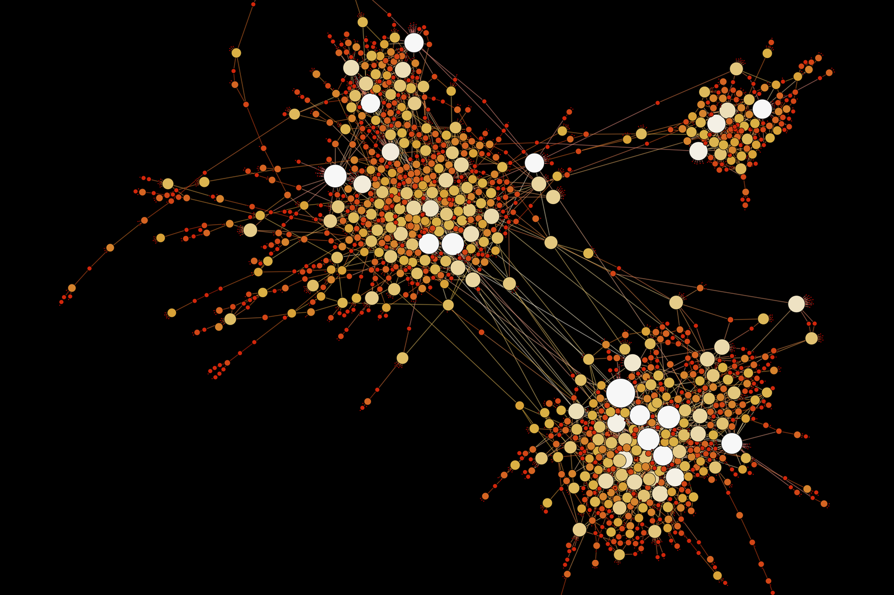

Prototype the loop
Input sample locked.
loop.latency: localHEAVY-LIFT MULTIPLAYER INFRASTRUCTURE
Gorillax gives studios a live game command deck for multiplayer, telemetry, patch flow, and performance-critical operations.
LOADOUT SUITE // SOFTWARE SLOTS
Session routing, lobbies, relay, matchmaking, telemetry, and patch flow in one operating layer for fast-moving game teams.
Rollback/prediction routes, tick-rate tuning, and relay paths stay visible before a playtest turns into a blame loop.
route.tick(rate: 60, rollback: enabled)
ENGINE INTEGRATION ROUTE
Drop Gorillax into Unity or Unreal, wire session state, ship to test regions, and verify build health before players hit the lobby.
gorillax sdk init --engine unrealsession.route(region: auto, rollback: enabled)region.deploy(playtest: west)build.health(min: 99.9)PERFORMANCE // RELIABILITY PROOF
24/7 monitoring, DDoS-aware relay posture, crash/error reporting, observability, and SLA-backed region visibility without hiding the failure modes.
PROTOTYPE TO LIVE OPS // ROUTE MAP
A multiplayer raycast path through production, from playable loop to monitored launch region.

Input sample locked.
loop.latency: localLobby state routed.
join.flow: validatedCrash signal armed.
cohort: closedRelay lanes loaded.
regions: 6Build health passing.
SLA: onlineRollback lane staged.
hotfix: readyLive quality watched.
p95: stableSIGNAL FROM THE FIELD
“Gorillax gave our engineers one place to see sessions, crashes, patch state, and live tuning before the weekend spike.”
“We stopped guessing whether matchmaking, relay, or build health was the bottleneck.”
“The prototype-to-live route became visible enough for production and engineering to share the same launch plan.”
COMMAND DECK // FULLY ONLINE
Book a technical walkthrough and see how Gorillax routes sessions, patches, telemetry, and performance signals from prototype to live ops.